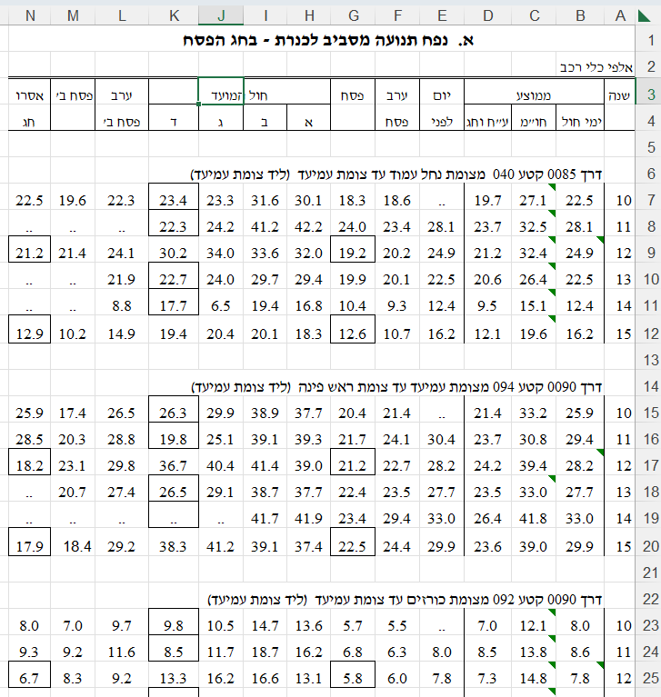

הכנת נתונים, או כמו שהיא מכונה באנגלית, Data Munging, היא סדר הפעולות שיש לעשות לנתונים על מנת שאפשר יהיה להשתמש בהם בכלל שלבי המחקר, כגון הצגת נתונים (ויז’ואליזציה), מידול, ובפעולות נוספות במהלך המחקר. בספר זה, אנחנו עושים שימוש רב בחבילת tidyverse על מנת להכין את הנתונים.
ראשית, נעמוד על הפילוסופיה מאחורי tidyverse.
3.1 קצת פילוסופיה
החבילה ב-R שנקראת tidyverse היא למעשה “חבילה של חבילות”.
היא מכילה מקבץ חבילות לעבודה עם נתונים כמו dplyr, וכמו tidyr שהן חבילות מאוד שימושיות במניפולציה על נתונים, וסידור נתונים, אבל היא מכילה גם חבילות שממוקדות סביב עולמות תוכן אחרים, כמו stringr לעבודה עם מחרוזות, lubridate לעבודה עם תאריכים, ו-forcats לעבודה עם פקטורים. כפי שחדי העין ישימו לב, לרוב שם של חבילה ירמוז לגבי מהות החבילה (לעיתים עם האות r איפשהו, ולעיתים עם קורטוב של הומור). הפירוט המלא של תוכן החבילה tidyverseוהחבילות שמוכלות בה זמין בקישור.
על מנת להתקין את החבילה נשתמש בפקודה install.packages("tidyverse"), ועל מנת לטעון אותה לאחר ההתקנה, נשתמש בפקודה library(tidyverse). שימו לב שבהתקנה צריך להשתמש במרכאות אבל בקריאה לאחר מכן אין צורך במרכאות. את ההתקנה צריך לעשות רק פעם אחת (והיא לוקחת המון זמן), ואת הקריאה לספריה צריך לעשות כל פעם שמפעילים מחדש את R.
כשלב יסודי, מה שחשוב להבין בעבודה עם נתונים זה שהשאיפה היא שתמיד נשאף להגיע ולעבוד במבנה מסודר שבו:
כל עמודה היא משתנה.
כל שורה היא תצפית.
כל תא הוא ערך של משתנה עבור תצפית מסוימות.
אם הדאטה המקורי שלנו לא במבנה הזה - אז כהכנה נרצה להביא אותו למבנה כזה, ואם הוא כבר במבנה המסודר הזה, אז כל פעולה שנעשה, עדיין תשמור את הדאטה במבנה מסודר. המבנה הזה מכונה באנגלית tidy (ומכאן השם tidyverse). אנחנו פשוט נכנה אותו פה מבנה “מסודר”.
ניתן שתי דוגמאות לדאטה, אחד מסודר ואחר לא מסודר. נתחיל בדוגמה לדאטה לא מסודר.
3.1.1 דאטה untidy
הלשכה המרכזית לסטטיסטיקה מנגישה הרבה נתונים לציבור באמצעות האתר שלה https://www.cbs.gov.il
מרבית הנתונים שמונגשים לציבור דרך האתר בקבצי אקסל הינם בפורמט לא מסודר. לדוגמה, קובץ שהורדתי מהכתובת הזו והוא עוסק בנפח תנועה מסביב לכנרת בחג הפסח וסוכות.
זה קובץ אקסל, והוא נראה כך:

דאטה לא-מסודר מאתר הלשכה המרכזית לסטטיסטיקה
איפה הבעיות עם הדאטה? נראה מה הסעיפים שאינם מתקיימים:
כל עמודה היא משתנה - מתקיים באופן חלקי. משום שיש עמודות מסוימות כמו עמודות H-K שהן ממוזגות מה שהופך אותם ל”לא בדיוק משתנה יחיד”. מדובר בקבוצת משתנים ותכונה שמתארת אותם. בפרט, היינו מצפים לראות שורת כותרת אחת שמתארת את שמות המשתנים (מה שמכונה באנגלית headers), אבל בפועל יש פה הרבה שורות כותרות.
כל שורה היא תצפית - לא מתקיים בכלל. יש שורות ריקות (כמו שורה 5), ויש שורות שאינן תצפית אלא מתארות תכונות של מקבץ תצפיות (כגון שורה 6 ושורה 14).
כל תא הוא ערך של משתנה עבור תצפית מסוימת - לא מתקיים. ראו סעיף קודם - מדובר בתאים שמכילים ערכים שמתארים מקבץ תצפיות.
כמו כן, יש עוד כל מיני חריגות לא ברורות בקובץ כגון תאים שמודגשים במסגרת גבול שחורה (מבלי שברור מה המסגרת אומרת), יש תאים שמכילים שתי נקודות (לא ברור מה זה, האם ערך חסר?), שמות המשתנים לעיתים מפוצלים על פני שתי שורות (כמו לדוגמה “ערב פסח” בעמודה F), ועוד בעיות.
בסיכומו של עניין - אילו היינו רוצים לקלוט קובץ כזה לתוך R על מנת לחלץ את המספרים שבו, היינו צריכים להתאמץ רבות על מנת להפוך את הקובץ למסודר. באופן כללי, ניתן לומר שקבצי אקסל הם מתכון לאסון כי הם מעודדים את המשתמשים לבנות קבצים לא-מסודרים על ידי ביצוע פעולות כמו מיזוג תאים, צביעה של תאים (שזה אינדיקציה לקידוד מידע כלשהו, אבל קידוד שקשה להבין אותו ב”שפת הנתונים”), ועוד שאר בעיות שאין זה המקום לתאר.
3.1.2 דאטה tidy
הנה דוגמה לדאטה מסודר מתוך חבילת palmerpenguins. חבילה זו מכילה נתונים של שלושה זנים של פינגוינים, ואנחנו עוד נשתמש בה בהמשך הספר. לכרגע רק נראה איך נראות עשרת השורות הראשונות בטבלת הנתונים (הסבר על הקוד והתוצר שרואים מצורף מטה):
palmerpenguins::penguins
# A tibble: 344 × 8
species island bill_length_mm bill_depth_mm flipper_length_mm body_mass_g
<fct> <fct> <dbl> <dbl> <int> <int>
1 Adelie Torgersen 39.1 18.7 181 3750
2 Adelie Torgersen 39.5 17.4 186 3800
3 Adelie Torgersen 40.3 18 195 3250
4 Adelie Torgersen NA NA NA NA
5 Adelie Torgersen 36.7 19.3 193 3450
6 Adelie Torgersen 39.3 20.6 190 3650
7 Adelie Torgersen 38.9 17.8 181 3625
8 Adelie Torgersen 39.2 19.6 195 4675
9 Adelie Torgersen 34.1 18.1 193 3475
10 Adelie Torgersen 42 20.2 190 4250
# ℹ 334 more rows
# ℹ 2 more variables: sex <fct>, year <int>
אנחנו רואים שהאובייקט הוא מסוג tibble (טבלה שהיא גרסה מודרנית יותר של ה-data.frame הבסיסי ב-R). לטבלה הזו יש 344 תצפיות (פינגוינים), ויש לה 8 עמודות (משתנים) שכוללים את הזן של הפינגוין, מאיזה אי הוא, אורך ועומד המקור, אורך הכנף, מסה, מין, והשנה שבה נצפתה הדגימה. הדאטה הזה מסודר ועומד בכללים שהגדרנו.
לגבי הקוד עצמו שבו השתמשנו: השימוש בנקודותיים :: אומר ל-R לקחת את האובייקט penguins שנמצא בתוך חבילת palmerpenguins (אפשר גם היה לפצל את הקוד וקודם להשתמש ב-library(palmerpenguins) ואז להריץ את head(penguins).
אם תרצו להריץ את הקוד הזה אצלכם במחשב, יכול להיות שתצטרכו קודם להתקין את החבילה על ידי שימוש בפקודה install.packages("palmerpenguins").
כעת לאחר שלמדנו קצת על מה הוא דאטה מסודר, נראה איך אפשר לקרוא נתונים ו”להציץ” בנתונים, כדי לקבל מושג מה יש בנתונים ואיך לגשת אליהם.
3.2 הצצה ראשונית
בדרך כלל לפני הצצה ראשונית על הנתונים, אנחנו נידרש לקרוא אותם. קריאת הנתונים יכולה להתבצע ממגוון פורמטים. לדוגמה:
קריאה מפורמט של CSV (Comma Separated Values, קרי קובץ טקסט המפריד ערכים באמצעות פסיקים), באמצעות פונקציות כגון read.csv, readr::read_csv.
קריאה מפורמט של אקסל באמצעות פונקציה כגון: readxl::read_excel.
קריאה מפורמט של תוכנות סטטיסטיות אחרות כגון SPSS או SAS באמצעות פקודות מחבילת haven.
פורמטים וכלים נוספים.
נתמקד בקבצי CSV, הפקודה המועדפת עלי היא readr::read_csv (בהשוואה ל-read.csv שנמצאת ב-Base R). הפקודה read_csv מעט מהירה ונוחה יותר מבחינת השליטה שהיא מאפשרת בקריאת הנתונים.
Tip
קראו את התיעוד של read.csv ושל read_csv. איזה הבדלים אתם מזהים בין הפקודות?
לצורך קריאת התיעוד ניתן לכתוב ב-Console ?read.csv, ?readr::read_csv.
נקרא כעת את טבלת הPenguins שראינו בחלק הקודם. שימו לב שאנחנו משתמשים במיקום קובץ באינטרנט, אבל ניתן גם לקרוא קבצים שנמצאים מקומית על המחשב.
על מנת להציץ בדאטה יש מספר פקודות שניתן להשתמש בהן:
הפקודה View (עם V גדולה) - פקודה זו מתאימה לדאטה בגודל קטן עד בינוני, והיא מציגה טבלה עם הנתונים.
הפקודה glimpse תציג את הערכים הראשונים של כל אחד מהמשתנים, כמו גם את שמות המשתנים, ואת סוגם.
הפקודה head תציג טבלה המוגבלת לשש התצפיות הראשונות. אפשר להשתמש בארגומנט של הפונקציה על מנת להציג יותר שורות. הפקודה tail עובדת באופן דומה (רק מתחתית הטבלה).
לכתוב ב-Console את שם הטבלה וללחוץ על Enter פשוט יציג את הטבלה (אם מדובר בtibble אז היא תוצג בפורמט קומפקטי ונוח).
# A tibble: 6 × 8
species island bill_length_mm bill_depth_mm flipper_length_mm body_mass_g
<fct> <fct> <dbl> <dbl> <int> <int>
1 Adelie Torgersen 39.1 18.7 181 3750
2 Adelie Torgersen 39.5 17.4 186 3800
3 Adelie Torgersen 40.3 18 195 3250
4 Adelie Torgersen NA NA NA NA
5 Adelie Torgersen 36.7 19.3 193 3450
6 Adelie Torgersen 39.3 20.6 190 3650
# ℹ 2 more variables: sex <fct>, year <int>
head(penguins, 10)
# A tibble: 10 × 8
species island bill_length_mm bill_depth_mm flipper_length_mm body_mass_g
<fct> <fct> <dbl> <dbl> <int> <int>
1 Adelie Torgersen 39.1 18.7 181 3750
2 Adelie Torgersen 39.5 17.4 186 3800
3 Adelie Torgersen 40.3 18 195 3250
4 Adelie Torgersen NA NA NA NA
5 Adelie Torgersen 36.7 19.3 193 3450
6 Adelie Torgersen 39.3 20.6 190 3650
7 Adelie Torgersen 38.9 17.8 181 3625
8 Adelie Torgersen 39.2 19.6 195 4675
9 Adelie Torgersen 34.1 18.1 193 3475
10 Adelie Torgersen 42 20.2 190 4250
# ℹ 2 more variables: sex <fct>, year <int>
penguins
# A tibble: 344 × 8
species island bill_length_mm bill_depth_mm flipper_length_mm body_mass_g
<fct> <fct> <dbl> <dbl> <int> <int>
1 Adelie Torgersen 39.1 18.7 181 3750
2 Adelie Torgersen 39.5 17.4 186 3800
3 Adelie Torgersen 40.3 18 195 3250
4 Adelie Torgersen NA NA NA NA
5 Adelie Torgersen 36.7 19.3 193 3450
6 Adelie Torgersen 39.3 20.6 190 3650
7 Adelie Torgersen 38.9 17.8 181 3625
8 Adelie Torgersen 39.2 19.6 195 4675
9 Adelie Torgersen 34.1 18.1 193 3475
10 Adelie Torgersen 42 20.2 190 4250
# ℹ 334 more rows
# ℹ 2 more variables: sex <fct>, year <int>
Tip
עברו על הפלט וודאו שאתם מצליחים להבין אילו חלקים בכל אחד מהפלטים מספק את המידע: סוג המשתנה, שם המשתנה, גודל הטבלה.
במבט על הפלט של כל אחת מהפקודות להלן ניתן כבר להבין את הפרטים הבאים:
האובייקט שאנחנו בוחנים הוא טבלה מסוג tibble, בגודל של 344 שורות (תצפיות), ו-8 עמודות (משתנים).
סוגי המשתנים הם מחרוזות (character - chr), מספרים ממשיים (double - dbl).
מחרוזות: species, island, sex
מספרים ממשיים: bill_length_mm, bill_depth_mm, flipper_length_mm, body_mass_g, year.
כעת, לאחר שלמדנו איך להבין את מבנה הדאטה באופן ראשוני, נציג פונקציות שמשמשות לשינוי משתנים (טרנספורמציות).
3.3 טרנספורמציות
טרנספורמציה היא פעולה (פונקציה) על משתנה או צירוף של משתנים המניבה משתנה עם ערך חדש. היא יכולה להיות פעולה מתמטית פשוטה כמו לוגריתם, פונקציה טריגונומטרית, או מכפלה בסקלר (ערך כלשהו).
גם פעולה על מחרוזת היא טרנספורמציה, כגון החזרת אורך המחרוזת או חלק ממחרוזת.
טרנספורמציות ב-R יבוצעו באמצעות הפקודה mutate, והן יכולות לדרוס ערך קיים או להוסיף משתנה חדש לטבלה. התוצאה תוחזר בטבלה חדשה לגמרי (ולא תדרוס את הטבלה שהוזנה לתוך הפונציה mutate.
בנוסף, על מנת להפעיל את הטרנספורמציה עם פקודת mutate (ובאופן כללי בשימוש ב-tidyverse) נשתמש באופרטור הנקרא pipe (מקטרת או צינור) ומטרתו להפוך את הקוד ליותר ברור. ישנם שני אופרטורים מסוג pipe: %>% ו-|>. בספר זה נשתמש בנוסח הראשון (הנוסח השני נמצא ב-Base R החל מגרסה 4.0.0).
להלן דוגמה המייצרת משתנה חדש (עמודה נוספת) ל-penguins, של משקל בקילוגרמים.
כפי שניתן לראות האובייקט new_penguins דומה מאוד לאובייקט המקורי penguins (שלא השתנה). האובייקט החדש מכיל עמודה נוספת שהיא המשקל של התצפית בק”ג.
האופרטור pipe מסמן ל-R להכניס את הדאטה penguins כארגומנט ראשון בפונקציה mutate. זה שקול לכתיב הבא: mutate(penguins, body_mass_kg = body_mass_g/1000). היתרון בשימוש ב-pipe יבוא לידי ביטוי כאשר נרצה לשרשר מספר רב של פקודות, וללא שימוש ב-pipe נצטרך להכניס פונקציה בתוך פונקציה או להגדיר הרבה אובייקטי ביניים.
להלן דוגמה נוספת, הפעם עם טרנספורמציה של מחרוזת, באמצעות פונקציה str_sub (מחבילת stringr) אשר דורסת את המשתנה sex והופכת male ל-m ו-female ל-f. המשתנה נדרס משום שהשם שהגדרנו בתוך הפקודה mutate הינו השם של המשתנה הקיים במקום שם משתנה חדש כפי שעשינו בדוגמה של משקל התצפית.
new_gender_penguin <- new_penguins %>%mutate(sex =str_sub(sex, start =1, end =1))glimpse(new_gender_penguin)
בחירת ושינוי שם משתנים היא פעולה שקוראת הרבה במהלך ניתוח נתונים, ובפרט אם הקובץ המקורי שלנו הוא עם כותרות (headers) בעברית, אז אחד הדברים הראשונים שנרצה לעשות הוא לשנות את שמות העמודות לאנגלית, על מנת שיהיה יותר קל לעבוד עם הנתונים.
על מנת לבחור משתנים ניתן להשתמש בפונקציה select ועל מנת לשנות שמות של משתנים ניתן להשתמש בפונקציה rename, לדוגמה, הקוד הבא משנה את שם המשתנה sex ל-gender ואז בוחר אותו.
כאשר עובדים עם קובץ שבו כותרות המקור היו בעברית, נצטרך להשתמש ב-Back ticks (המרכאה שנמצאת מעל מקש ה-Tab) על מנת לבחור או לשנות את שם המשתנה. לדוגמה נניח שיש לנו שם של משתנה שנקרא”מגדר” ואנחנו רוצים לשנות אותו ל-gender
my_hebrew_data %>%rename(gender =`מגדר`)
לאחר שינוי השם ל-gender ניתן יהיה לוותר על ה-Back ticks.
3.5 בחירה מתקדמת
ישנן פונקציות עזר שמאפשרות לנו לבחור בצורה חכמה את המשתנים שעליהם ברצוננו להכיל פעולות מסוימות (כגון טרנספורמציות, שינוי שם, או אפילו רק לבחור משתנים בצורה חכמה). הפונקציות המרכזיות שישמשו אותנו בבחירת משתנים מתקדמת הינן:
where כדי להכיל תנאים על סוג המשתנה, לדוגמה משתנה שהוא מספרי או תווים;
ends_with, starts_with, contains, any_of, matches כדי לבחור משתנים לפי תת-מחרוזת שמופיעה בהם;
across על מנת להחיל טרנספורמציות על כל המשתנים שעונים על קריטריונים שהוגדרו עם הפונקציות לעיל.
נמחיש באמצעות שתי דוגמאות.
דוגמה ראשונה: נניח שברצוננו לחלק ב-10 את כל המשתנים שמסתיימים ב-“mm” (בעצם להחליף מיחידות של מילימטר ליחידות של ס”מ). אז ניעזר בפונקציה ends_with("mm") בשביל לזהות את המשתנים הללו, ובפונקציה across על מנת להפעיל עליהם את הטרנספורמציה ~{.x/10} (שזו דרך סימבולית לבנות פונקציה שמחלקת מספר ב-10). התוצאה הסופית תיראה כך. לבסוף נרצה לשנות את “mm” ל- ”cm”.
שימו לב שהשתמשנו בפונקציה rename_with שמאפשרת להגדיר שינוי של קבוצת משתנים בבת אחת במקום משתנים ספציפיים אחד-אחד (המתבצע באמצעות rename).
דוגמה שניה: נניח שברצוננו לחתוך את כל המשתנים שהן מחרוזות רק לשלושת התווים הראשונים שלהם. הפונקציה באמצעותה חותכים מחרוזות היא str_sub ונשתמש ב-where(is.character) בשביל לאתר את כל המשתנים שהם מחרוזות. נפעיל זאת על התוצאה של החישוב מהדוגמה הקודמת (על מנת לקבל טבלה חדשה שמכילה את כל השינויים במצטבר), באופן הבא:
penguin_short <- penguin_cm %>%mutate(across(where(is.character),~str_sub(.x, start =1L, end =3L)))glimpse(penguin_short)
עדכנו את הטבלה כך שלכל המשתנים שהינם מסוג מחרוזת תתווסף הסיומת “_chr”.
בצעו זאת בשתי דרכים:
באמצעות rename;
בבת אחת על ידי שימוש ב-where, וב-paste0, בתוך פקודת rename_with.
כעת השתמשו בפונקציה mutate על מנת להמיר את המשתנה body_mass_g מגרמים לקילוגרמים. בצעו זאת בשתי דרכים:
באמצעות mutate על ידי רשימת הטרנספורמציה ישירות על המשתנה;
באמצעות mutate על ידי שימוש בפונקציות בחירה (לדוגמה ends_with("_g"), ביחד עם across).
3.6 פעולות סינון
פעולה נפוצה בניתוח נתונים היא סינון של הנתונים לפי קריטריונים מסוימים. הפקודה שמסייעת לנו בסינון נקראת filter, ואפשר להגדיר באמצעותה קריטריונים או שילוב של קריטריונים שונים.
לדוגמה, הקוד הבא יסנן מתוך הדאטה רק פינגויינים שחיים באי Dream:
בדוגמה זו ביצענו שני חיתוכים אחד אחרי השני, כאשר הראשון מכיל אופרטור “או” (תנאי מגדר שווה זכר או ערך חסר), והחיתוך השני נותר כפי שהיה בדוגמה הקודמת. בצורה כזו קיבלנו הפעלה של שני התנאים (“וגם”).
ניתן גם להשתמש במספר ארגומנטים בתוך פקודת filter אחת (הפרדה עם פסיק), וניתן גם להשתמש באופרטור &. לדוגמה, שתי הגרסאות הבאות יניבו את אותה התוצאה:
penguins %>%filter(!is.na(sex) | sex =="male", island =="Dream") penguins %>%filter((!is.na(sex) | sex =="male") & island =="Dream")
Tip
היעזרו בפקודה filter וכתבו קוד שיחלץ את כל הפינגווינים מסוג Adelie או Chinstrap, בשלוש דרכים שונות:
על ידי שימוש באופרטור %in% (בתוך…)
על ידי שימוש באופרטור != (שונה מ…)
על ידי שימוש באופרטור | (או)
3.7 פעולות לפי קיבוצים
בעת ניתוח נתונים, פעולה המבוצעת באופן תדיר היא פעולת סיכום לפי קיבוצים. היא שימושית במצבים בהם אנחנו רוצים להפעיל פונקציה וקטורית, כזו שמקבלת וקטור ומחזירה ערך בודד (כגון: ממוצע, מינימום, מקסימום, סטיית תקן, חציון, סכום, וכו’). פעולה לפי קיבוץ תאפשר לנו לקבל בבת אחת את הפעלת הפונקציה הוקטורית על פני קבוצות שונות המובחנות בנתונים.
נמשיך עם דוגמת הפינגווינים. נניח שאנחנו רוצים להשוות בין הזנים השונים, ועבור כל זן פינגווינים לחשב את המשקל הממוצע, סטיית התקן, משקל מינימלי ומשקל מקסימלי בין התצפיות. הקוד הבא מטפל בחישובים הללו, ויש לו שתי פונקציות חשובות שנסביר עליהן: group_by ו-summarize.
קיבלנו טבלה בעלת שלוש שורות, כל שורה מתייחסת לזן מסוים של פינגויינים, ומציגה את המשקל הממוצע, מינימלי, מקסימלי, וסטיית תקן.
משמעות שרשרת הפקודות:
הפקודה הראשונה filter משמשת כדי להוציא החוצה תצפיות חסרות.
הפקודה הבאה group_by מנחה לבצע את החישובים שאחריה לפי הקיבוץ המוגדר (במקרה זה לפי המשתנה species.
הפקודה האחרונה בשרשרת, summarize, מזכירה קצת את mutate עליה הסברנו בחלק של טרנספורמציות, אבל מכיוון שבמקרה זה מדובר בחישובים שמקבלים וקטור ומחזירים מספר, אנחנו צריכים להשתמש בה. היא יודעת לעבוד עם הקיבוצים שהוגדרו ולהחזיר את החישובים המבוקשים. בתוך הפקודה summarize אנחנו מגדירים איזה חישובים אנחנו רוצים, וגם מהם שמות המשתנים החדשים. בדוגמה הגדרנו את avg_mass כמשתנה חדש שהוא תוצאת החישוב של הפונקציה mean על המשתנה המקורי שנקרא body_mass_g, וכנ”ל עבור יתר המשתנים (min_mass, max_mass, sd_mass).
בפקודה group_by ניתן להגדיר קיבוצים לפי מספר משתנים.
Tip
שנו את הקוד בדוגמה האחרונה כך שתתקבל טבלה עם שש שורות, הכוללת חישובים עבור כל זן ומין הפינגויין.
את הפונקציה across הכרנו כבר בשלב מוקדם יותר בפרק זה (כשהסברנו על הפוקנציה mutate). באופן אמצעות שימוש בפקודה across ניתן להגדיר פעולות סיכום מורכבות על פני קיבוצים שונים ועל פני מספר משתנים רב. לדוגמה, נניח שאנו רוצים לקבל ממוצע של כל המשתנים הנומריים על פני סוגים שונים של פינגווינים. נוכל לעשות זאת באמצעות הקוד הבא:
יש הרבה הכללות שניתן לעשות עם הקוד הקודם, לדוגמה באופן בחירת המשתנים עליהם עובדת הפקודה, בהגדרת הפונקציה, או בהגדרת הרבה פונקציות בבת אחת.
כדוגמה שממנפת הרבה מהגמישות אליה ניתן להגיע אנחנו מצרפים את הקוד הבא. הקוד מחשב עבור כל המשתנים שמסתיימים ב "_mm" ממוצע, וסטיית תקן, תוך שהחישובים מתעלמים מערכים חסרים באמצעות שימוש בארגומנט na.rm=TRUE של הפונקציות mean, sd. הקוד משתמש בקיבוץ לפי סוג הפינגויין והאי ממנו הגיע.